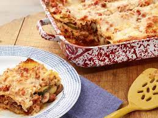

Lasagna

Description
This recipe may be a bit different from what you would expect for a traditional lasagna. The ingredients include italian sausage, cremini mushrooms,
zucchini, garlic and lots of cheese. In this recipe you will even make your own "all-purpose marinara" sauce. Prep time is just over half an hour,
with cook time rounding out to about an hour and a half. When everything is said and done you will have a delicious main dish that an feed the whole
family.
Ingredients
- Kosher salt
- 1 1/2 (16-ounce) boxes lasagna noodles
- Olive oil
- 1 pound bulk Italian sausage
- 4 cloves garlic, smashed, divided
- Crushed red pepper flakes
- 1 (12-ounce) package cremini mushrooms, stems removed, caps sliced
- 1 zucchini, cut in 1/2 lengthwise and cut on the bias
- 2 cups ricotta
- 2 cups grated Parmigiano-Reggiano, divided
- 2 eggs
- 6 to 7 basil leaves, cut into chiffonade
- 1 recipe Chef Anne's All-Purpose Marinara Sauce, recipe follows:
- 1/4 cup extra-virgin olive oil
- 1/4 pund pancetta, diced
- 2 large Spanish onions, cut into 1/4-inch dice
- Kosher salt
- 4 large cloves garlic, smashed and chopped
- 4 (28-ounce) cans Italian plum San Marzano tomatoes
- 1 pound grated mozzarella